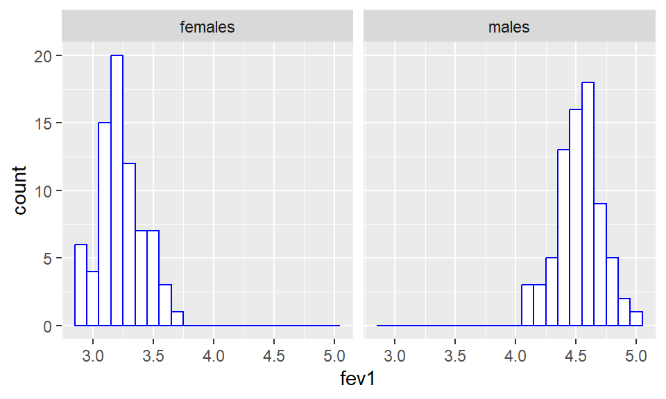
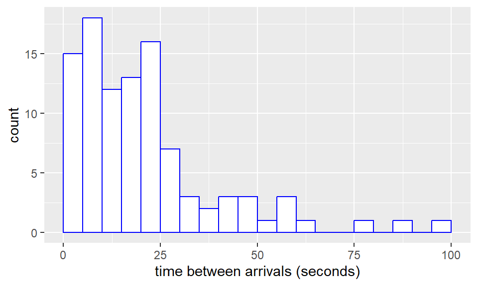

6 Chapters 3 and 4 problems
- An investigator is interested in the daily number of arrivals at a new hospital ward for premature babies. The hospital ward is not open yet, but will open shortly. Let \(X_i\) be the number of arrivals that there will be on day \(i\). She plans to observe the numbers of arrivals on each of the first 30 days, and so she will observe a sample \(X_1,\ldots,X_{30}\).
- Suggest a suitable model for the data. Hint: choose one of the distributions used in the examples in Chapter 3. Present your answer by completing the following: \[ X_1,\ldots,X_{30} \stackrel{i.i.d}{\sim}\_\_\_\_\_\_\_\_\_\_\_\_\_\_\_\_ \]
- Your model in part (a) should have a single unknown parameter. The investigator plans to estimate this parameter using the estimator \(\bar{X}\). Is this estimator unbiased and consistent?
- Following the notation in the lecture notes, explain the difference between \(\bar{X}\) and \(\bar{x}\) in this context.
- A dataset contains FEV1 (Forced Expiratory Volume 1) measurements (in litres) in healthy adults aged between 20-30 years. FEV1 is the volume of air forcefully exhaled in 1 second. (The ratio of FEV1 to FVC: forced vital capacity, the total volume of air that can be exhaled, can be used to detect lung disorders). There were 75 females and 75 males in the study, with their values stored in R in the vectors
femalesandmalesrespectively. Plots and summary statistics are shown below.
## Warning: package 'ggplot2' was built under R version 4.4.2
## [1] 242.5690 786.8107 339.3340 1537.8311Suggest a suitable model for these data, defining appropriate notation, and estimate the parameters.
- In a shop, times between customer arrivals are recorded, for 101 customers (e.g. customer number 17 arrived 30 seconds after customer number 16). A histogram of the data is shown below. 
What probability distribution would you use to model these data? The 100 times are stored in a vector times. Using the output below, suggest an estimate for the parameter in your distribution.
## [1] 2061.353- Suppose we have random variables \[
X_1,X_2,\ldots,X_{n}\stackrel{i.i.d}{\sim} N(\mu, \sigma^2),\]
- For the notation in Chapter 4, explain the difference between \(\mu\), \(\bar{X}\) and \(\bar{x}\). Which of the following statements are correct?
- \(\mathbb{E}(X_i) = \mu\)
- \(\mathbb{E}(X_i) = \bar{X}\)
- \(\mathbb{E}(X_i) = \bar{x}\)
- \(\mathbb{E}(\bar{X}) = \mu\)
- \(\mathbb{E}(\bar{x}) = \mu\)
- \(\mathbb{E}(\bar{x}) = \mathbb{E}(\bar{X})\)
- For the notation in Chapter 4, explain the difference between \(\sigma^2\), \(S^2\) and \(s^2\). Which of the following statements are correct?
- \(\mathbb{E}(S^2) = \sigma^2\)
- \(\mathbb{E}(s^2) = \sigma^2\)
- \(\mathbb{E}(s^2) = \mathbb{E}(S^2)\)
- \(Var(X_i) = \sigma^2\)
- \(Var(X_i) = s^2\)
- \(Var(X_i) = S^2\)
- For the notation in Chapter 4, explain the difference between \(\mu\), \(\bar{X}\) and \(\bar{x}\). Which of the following statements are correct?
- A random sample of 40 observations from a \(N(\mu, 4)\) distribution provides the following information: \(\sum_{i=1}^{40}x_i = 334\). Estimate \(\mu\) and give the standard error of the estimate. How big would the sample have to be for the standard error to be no more than 0.1? How big would the sample have to be for the standard error to be no more than 0.01?
- Suppose \(X_1,\ldots,X_n\) are independent and identically distributed random variables, each having the \(N(0, \sigma^2)\) distribution. The situation here is a little different to that in Section 4.1.1 in your notes, in that the mean parameter \(\mu\) is known to be 0. Prove that \[ \frac{1}{n}\sum_{i=1}^nX_i^2 \] is an unbiased estimator of \(\sigma^2\).
- A survey polls a random sample of 300 students and finds that 120 of them are very satisfied with their accommodation. Estimate the proportion of the population (from which the sample was taken) that are very satisfied with their accommodation. Give the (estimated) standard error for this estimate.
- In the manufacture of hip replacement joints, a particular component has to be made to certain specifications: if its length, breadth and height do not lie within specified ranges, the component will not fit, and will have to be scrapped. A new process has been designed for the manufacture of this component, and the interest is in the population proportion, \(\theta\) of components that will be compliant (and so do not need to be scrapped). A random sample of \(n\) components is to be selected, and the number \(X\) out of \(n\) components that are compliant will be observed.
Choose a suitable probability distribution for \(X\), that links the observed proportion of compliant components to the population proportion \(\theta\).
Show that \(\frac{X}{n}\) is an unbiased and consistent estimator for \(\theta\).
- Two different measuring devices are used to measure the concentration of glucose in an individual’s blood. Neither device is perfectly accurate: there is likely to be an error in each measurement, but the (absolute value of the) error is likely to be smaller using the first device. Before the measurements are taken, let \(X\) and \(Y\) represent the two measurements, and let \(\mu\) be the true glucose concentration (all in millimoles per litre). We model \(X\) and \(Y\) as independent normal random variables, each having expected value \(\mu\) but having different variances \(\sigma^2\) and \(\tau^2\) respectively:
\[X\sim N(\mu, \sigma^2),\] \[Y\sim N(\mu, \tau^2).\]
If the linear combination \(Z = aX+bY\) is to be used as an estimator of \(\mu\), explain what relationship between \(a\) and \(b\) is necessary for this estimator to be unbiased.
Derive an expression for the standard error of \(Z\).
Prove that the unbiased estimator of this form with smallest standard error has \[\begin{align*} a &= \frac{\tau^2}{\sigma^2+\tau^2},\\ b &= \frac{\sigma^2}{\sigma^2+\tau^2}, \end{align*}\] and variance \[ \frac{\sigma^2\tau^2}{\sigma^2+\tau^2}. \]
If the first device was known to be perfectly accurate, but the second device was not, what effect would this have on the expressions for \(a\) and \(b\) in part (c)? Give an intuitive (common sense) explanation for your result.
- Let \(X_1,\ldots,X_n\) be independent and identically distributed random variables, with mean \(\mu\) and variance \(\sigma^2\). Their distribution is not specified (i.e. in this question we do not assume they are normally distributed.)
Obtain expressions for \(\mathbb{E}(X_i^2)\) and \(\mathbb{E}(\bar{X}^2)\) in terms of \(\mu\) and \(\sigma^2\).
Using the result that \[ \sum_{i=1}^n(X_i - \bar{X})^2 = \left(\sum_{i=1}^nX_i^2 \right)- n\bar{X}^2, \] obtain an expression for \(\mathbb{E}\left(\sum_{i=1}^n(X_i - \bar{X})^2\right)\).
Hence show that \[ S^2:=\frac{1}{n-1}\sum_{i=1}^n(X_i - \bar{X})^2 \] is an unbiased estimator for \(\sigma^2\). (This shows that \(S^2\) is an unbiased estimator of \(Var(X_i)\) for any distribution with a finite variance, given i.i.d. observations \(X_1,\ldots,X_n\)).
- Challenge problem. Prove Theorem 4.1 in your notes: if an estimator is unbiased, and its standard error tends to 0 as the sample size \(n\) tends to infinity, it will also be a consistent estimator. Hint: use Chebyshev’s inequality.